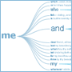
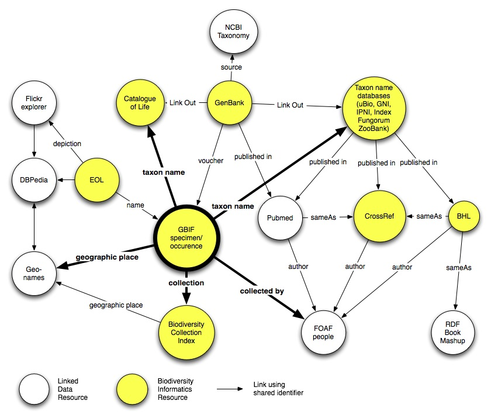

The first step in any data analysis is to get the data into a form you can analyse. Often the data isn't quite in the right format, and requires a little massaging before you can work with it. In many cases simple tools like "search and replace" are sufficient, but sometimes you need more powerful tools, such as regular expressions.
Regular expressions are rules for matching strings, for example:
Pattern
Example that pattern matches
Comment
\d
1
single digit
\d+
12
one or more digits
[0-9]{4}
2012
four digit number (e.g., a year)
\w+
abc
word
[A-Z][A-Z]\d+
FJ559180
string starting with two capital letters followed by numbers
[W|E]
W
match either W or E
\d+°\d+'[W|E]
10°36'E
longitude
Armed with regular expressions like these we can develop tools to extract information from text, such as the specimen parser which finds museum specimen codes.
Regular expressions
Using the Regular Expression Tester below, create regular expressions for the following tasks:
Two words, e.g., "hosted by"
A species name, e.g., Homo sapiens
A species name with a subgenus, e.g., Varanus (Euprepiosaurus) rainerguentheri
A museum specimen code, e.g. "USNM 100895"
A latitude, e.g. 10°02'N (remember to handle both the northern and southern hemispheres)
Regular Expression Tester
This regular expression tester (from Rob Locher's web site) uses the regular expression parser in your browser's implementation of JavaScript.
Test String:
Pattern: /
Options: /
Original string:
Tips
Expression
Matches
[abc]
A single character: a, b, or c
[^abc]
Any single character but a, b, or c
[a-z]
Any character in the range a-z
[a-zA-Z]
Any character in the range a-z or A-Z (any alphabetical character)
\s
Any whitespace character [ \t\n\r\f\v]
\S
Any non-whitespace character [^ \t\n\r\f\v]
\d
Any digit [0-9]
\D
Any non-digit [^0-9]
\w
Any word character [a-zA-Z0-9_]
\W
Any non-word character [^a-zA-Z0-9_]
\b
A word boundary between \w and \W
\B
A position that is not a word boundary
|
Alternation: matches either the subexpression to the left or to the right
()
Grouping: group all together for repetition operators
^
Beginning of the string
$
End of the string
Repetition Operator
Meaning
{n,m}
Match the previous item at least n times but no more than m
times
{n,}
Match the previous item n or more times
{n}
Match exactly n occurrences of the previous item
?
Match 0 or 1 occurrences of the previous item {0,1}
+
Match 1 or more occurrences of the previous item {1,}
*
Match 0 or more occurrences of the previous item {0,}
Option
Description
g
"Global" -- find all matches in the string rather than
just the first
i
"case Insensitive" -- ignore character case when matching
m
"Multiline" -- search over more than one line if the
text contains line breaks
Extracting data from PDFs
There are an increasing number of tools for extracting data from PDFs, such as Tabula. Once you've downloaded and installed Tabula, point your web browser at http://127.0.0.1:8080 and follow the instructions.
Taxonomic name cleaning using OpenRefine
OpenRefine is an elegant tool for data cleaning. One of its most powerful features is the ability to call "Reconciliation Services" to help clean data, for example by matching names to external identifiers.
For this course I've implemented the following service:
Click on the column header Names and choose Reconcile → Start reconciling.
A dialog will popup asking you to select a service.
If you've already added a service it will be in the list on the left. If not, click the Add Standard Services... button at the bottom left and paste in the URL (in this case https://observant-skull.glitch.me).
Once the service has loaded click on Start Reconciling. Once it has finished you should see most of the names linked to GBIF (click on a name to check this):
Sometimes there may be more than one possible match, in which case these will be listed in the cell. Once you have reconciled the data you may want to do something with the reconciliation. For example, if you want to get the ids for the names you've just matched you can create a new column based on the reconciliation. Click on the Names column header and choose Edit column → Add column based on this column.... A dialog box will be displayed:
In the box labelled Expression enter cell.recon.match.id and give the column a name (e.g., "ID"). You will now have a column of ids for the names:
You could also get the names extracted by creating a column based on the values of cell.recon.match.name. To compare this with the original values, click on the Names column header and choose Reconcile → Actions → Clear reconciliation data. Now you can see the original input names, and the string extracted from each name:
Wordtrees

In the lecture we saw an example of article titles which contain information about host-parasite relationships:
Morphological and molecular description of Haematoloechus meridionalis n. sp. (Digenea: Plagiorchioidea: Haematoloechidae) from Rana vaillanti brocchi of Guanacaste, Costa Rica
Halipegus eschi n. sp. (Digenea: Hemiuridae) in Rana vaillanti from Guanacaste Province, Costa Rica
Haematoloechus danbrooksi n. sp. (Digenea: Plagiorchioidea) from Rana vaillanti from Los Tuxtlas, Veracruz, Mexico
These titles have a similar structure, which suggests were could develop a tool to parse these titles and extract the host-parasite associations. To explore this further we can use a tool like Many Eyes Wordtrees.
IBM used to have a tool called "Many Eyes" for creating interesting visualiations but it is now offline. Instead will use the Wordtree visualisation to explore the structure of the following sentences:
Eimeria azul sp. n. (Protozoa: Eimeriidae) from the eastern cottontail, Sylvilagus floridanus, in Pennsylvania
Mirandula parva gen. et sp. nov. (Cestoda, Dilepididae) from the long-nosed Bandicoot (Perameles nasuta Geoff.)
Hysterothylacium carutti n. sp. (Nematoda: Anisakidae) from the marine fish Johnius carutta Bloch of Bay of Bengal (Visakhapatnam)
Ctenascarophis lesteri n. sp. and Prospinitectus exiguus n. sp. (Nematoda: Cystidicolidae) from the skipjack tuna, Katsuwonus pelamis
Buticulotrema stenauchenus n. gen. n. sp. (Digenea: Opecoelidae) from Malacocephalus occidentalis and Nezumia aequalis (Macrouridae) from the Gulf of Mexico
Nubenocephalus nebraskensis n. gen., n. sp. (Apicomplexa: Actinocephalidae) from adults of Argia bipunctulata (Odonata: Zygoptera)
Studies on Stenoductus penneri gen. n., sp. n. (Cephalina: Monoductidae) from the spirobolid millipede, Floridobolus penneri Causey 1957
Species of Cloacina Linstow, 1898 (Nematoda: Strongyloidea) from the black-tailed wallaby, Wallabia bicolor (Desmarest, 1804) from eastern Australia
A new marine Cercaria (Digenea: Aporocotylidae) from the southern quahog Mercenaria campechiensis
A new species of Breinlia (Breinlia) (Nematoda: Filarioidea) from the south Indian flying squirrel Petaurista philippensis (Elliot)
The holy grail of data linking is to be able to seamlessly navigate a web of data (in much the same we the World Wide Web enables us to navigate through documents). For example, we could start with a museum specimen and navigate through all the connected data elements (DNA sequences, publications, phylogenies, taxonomic names, ecological data, etc.). Or, more correctly, we could have computers do this for us. Linked data is aimed at making data computer-readable so that we can treat the web as a giant database.

This is the vision of linked data (see TED talk by Tim Berners-Lee below).
Wikidata
Wikidarta is a large, rapidly growing knowledge graph that covers everything
in Wikipedia, and more. I have some example Wikidata queries, and below
are some more examples of using Wikidata to ask various biological queries.
The Plazi project uses varius legal arguments to cliam that images can be extracted from scientific publications and made freely available. You can search the images they have extracted using the Ocellus tool.
Egloff, W., Agosti, D., Kishor, P., Patterson, D., & Miller, J. (2017). Copyright and the Use of Images as Biodiversity Data. Research Ideas and Outcomes, 3, e12502. doi:10.3897/rio.3.e12502
Fontaine, B., Perrard, A., & Bouchet, P. (2012). 21 years of shelf life between discovery and description of new species. Current Biology, 22(22), R943–R944. doi:10.1016/j.cub.2012.10.029
Muñoz, G., Kissling, W. D., & van Loon, E. E. (2019). Biodiversity Observations Miner: A web application to unlock primary biodiversity data from published literature. Biodiversity Data Journal, 7. doi:10.3897/bdj.7.e28737